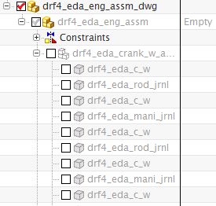
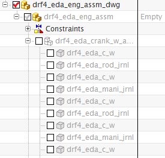

显示装配模型
-
在装配导航器中，展开 drf4_eda_eng_assm 与 drf4_eda_crank_w_assm 节点。

-
选中灰色的 drf4_eda_eng_assm 复选框。

将出现下列信息：
这个组件不能设为可见。
它是一个排除的引用集。由于空引用集排除了所有模型数据，您不能将装配中的任何对象设为可见。
-
点击确定。
在装配导航器中，展开 drf4_eda_eng_assm 与 drf4_eda_crank_w_assm 节点。

选中灰色的 drf4_eda_eng_assm 复选框。
将出现下列信息：
|
这个组件不能设为可见。 |
由于空引用集排除了所有模型数据，您不能将装配中的任何对象设为可见。
点击确定。